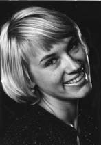
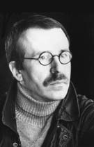
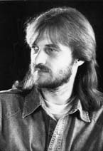

Сергей Моторев
артист оркестра
В театре с 1997 г.
Евгения БелоцерковскаяактрисаЗакончила Белорусскую государственную академию искусств. В театре с 13.09.1989 г. Основные роли: Анфиса Даниловна Антрыгина, вдова в спектакле «Праздничный сон или Женитьба Миши Бальзаминова» (Александр Островский), Мама в спектакле «Малыш и Карлсон» (А. Линдгрен), Жена в спектакле «Она в отсутствии любви и смерти» (Э. Радзинский), Леди в спектакле «Костюмер» (Р. Харвуд), Агния Власьевна, главврач госпиталя в спектакле «Я твоя невеста» (В. Астафьев), Глэдис в спектакле «Чествование» (Б. Слэйд), Стелла ("Трамвай "Желание" Т. Уильямса), Адельма ("Турандот" К. Гоцци), Полли ("Трехгрошовая опера" Б. Брехта), Лидия ("Бешеные деньги" А. Островского), Ата ("Сестры Психеи" С. Ковалева), Бифрон ("Школа шутов" М. де Гельдерода), Херарда ("Изобретательная влюбленная" Лопе де Веги), Жанетта ("Венчание" Ж. Ануя), Лаура ("Маленькие трагедии" А. Пушкина), Карла ("Ночь Гельвера" И.Вилквиста). |
Григорий Белоцерковскийзаслуженный артист БеларусиЗакончил Белорусский государственный Театрально-художественный институт. В театре с 03.01.1985 г. Основные роли: Мультик в спектакле «ВЕЧЕР» (Алексей Дударев), Лукьян Лукьяныч Чебаков, офицер в отставке в спектакле «Праздничный сон или Женитьба Миши Бальзаминова» (Александр Островский), Сосед в спектакле «Очень простая история» (М.Ладо), Норман в спектакле «Костюмер» (Р.Харвуд), Средний Обломок ("В открытом море" С.Мрожека), Лев ("Волшебник изумрудного города" А. Волкова), Отец ("Венчание" Ж.Ануя), Эрнандо ("Изобретательная влюбленная" Лопе де Веги), Капитан ("Люти+Капитан" А. Дударева), Тимур ("Турандот" К.Гоцци), Лапушинский ("Воспоминание о Вавилоне" Е.Поповой), Браун ("Трехгрошовая опера" Б. Брехта), Оргон ("Тартюф" Ж. Мольера), Луи Бежар – актер (по пьесе - Журден) в спектакле «Полоумный Журден» (М.Булгаков), Гвозд ("Легенда о Машеке" С.Ковалева), Либеро Бокка ("Слепой, хромой и старая девушка" А.Никколаи), Кинтано ("Дон Хиль - зеленые штаны" Тирсо де Молина), Старик ("Приходи и уводм" Н.Птушкиной). |
Зоя Бурцевазаслуженная артистка Республики БеларусьЗакончила Горьковское театральное училище. В театре с 01.09.1980 г. Основные роли: Домна Евстигнеева Белотелова, вдова в спектакле «Праздничный сон или Женитьба Миши Бальзаминова» (Александр Островский), Регилья в спектакле «Дикие лебеди» (Г.-Х. Андерсен), Подруга в спектакле «Она в отсутствии любви и смерти» (Э. Радзинский), Фрекен Бок в спектакле «Малыш и Карлсон» (А. Линдгрен), Мадам Ортанс (руководитель оркестра) в спектакле «Оркестр мадам Ортанс» (Жан Ануй), Мадам Паче ("Шестеро персонажей в поисках автора" Л. Пиранделло), Селия ("Трехгрошовая опера" Б. Брехта), Мама ("Сильное чувство" И. Ильфа, Е. Петрова), Фолиаль ("Школа шутов" М. де Гельдерод), Вера ("Невеста из Парижа" Б. Рацера, В. Константиноа), Белиса ("Изобретательная влюбленная" Лопе де Веги), Дорина ("Тартюф" Ж. Мольера), Алла ("Прощание" Е. Поповой), Люти ("Люти + Капитан" А. Дударева). |
Александра ВиниченкоактрисаВ театре с октября 2003 года. Закончил Могилевское государственное училище культуры им. Н.К.Крупской.Основные роли: Госпожа Хансен в спектакле «Дикие лебеди» (Г.-Х.Андерсен), Она в спектакле «Она в отсутствии любви и смерти» (Э.Радзинский), Корова Зорька в спектакле «Очень простая история» (М.Ладо), Люба ("Приходи и уводи" Н.Птушкиной), Баба Яга, Егорушка ("Два клена" Е.Шварца), Елизавета II ("Комната смеха для одинокого человека" О.Богаева), Медсестра ("Я твоя невеста" В.Астафьева), Певица ("Полоумный Журден" М.Булгакова). |
Василий ГалецартистЗакончил Белорусский государственный театрально-художественный институт.В театре с 21.12.1985 г. Основные роли: Карлсон в спектакле «Малыш и Карлсон» (А. Линдгрен), Юбер – актер (по пьесе – г-жа Журден) в спектакле «Полоумный Журден» (М.Булгаков), Участник проекта Шекспир company.by «Все пьесы Шекпира», Философ в спектакле «Я твоя невеста» (В.Астафьев), Баба Яга в спектакле «Аленький цветочек» (С.Аксаков), Страшила ("Волшебник изумрудного города" А.Волкова), Кот ("Кот в сапогах" С.Прокофьева, Г.Сапгира), Лапушинский ("Воспоминание о Вавилоне" Е. Поповой), Филч ("Трехгрошовая опера" Б. Брехта), Марон ("Сестры Психеи" С. Ковалева), Званцов ("Светопреставление" по М. Горькому), Герцог, Моцарт ("Маленькие трагедии" А. Пушкина), Карасев ("Прощание" Е. Поповой), Гальгют ("Школа шутов" М. де Гельдерода). Режиссер - постановщик сказки М. Бартенева "Про тех, кто боится". |
Людмила ГуринаактрисаЗакончила Ярославское театральное училище. В театре с 20.06.1969 г. Основные роли: Лошадь Сестричка в спектакле «Очень простая история» (М. Ладо), Мать ("Шестеро персонажей в поисках автора" Л.Пиранделло), Харми ("Волшебник изумрудного города" А. Волкова), Скирина ("Турандот" К. Гоцци), Чебоксарова ("Бешенные деньги" А.Островского), Лялька ("Прощание" Е. Поповой), Мать ("Венчание" Ж. Ануя), Дама, Наталья Степановна, Мурашкина, Попова ("Снился мне сад в подвенечном уборе" по А. Чехову). |
Елена ДудичактрисаЗакончила Киевский государственный институт театрального искусства им. Карпенко-Карого. В театре с 02.10.1986 г. Основные роли: Матрена, кухарка у Бальзаминовых в спектакле «Праздничный сон или Женитьба Миши Бальзаминова» (Александр Островский), Мать в спектакле «Она в отсутствии любви и смерти» (Э. Радзинский), Мэгги в спектакле «Чествование» (Б. Слэйд), Бланш ("Трамвай "Желание" Т. Уильямса), Антония ("Свободная пара" Д. Фо), Дорис ("Если бы я знала, что ты придешь, я бы испекла тебе пирог" Б. Слейда), Лена ("КИМ" А. Дударева), Херарда ("Изобретательная влюбленная" Лопе де Веги), Биоррон ("Школа шутов" М. де Гельдерода), Арлет ("Невеста из Парижа" Б. Рацера, В. Константинова). |
Дмитрий ДудкевичактерВ театре с октября 2003 года. Закончил Могилевское государственное училище культуры им. Н.К.Крупской. Основные роли: Хеннеси в спектакле «Билокси-блюз» (Нил Саймон), Рулле в спектакле «Малыш и Карлсон» (А. Линдгрен), Хёльгер в спектакле «Дикие лебеди» (Г.-Х. Андерсен), Музыкант в спектакле «Она в отсутствии любви и смерти» (Э. Радзинский), Алексей в спектакле «Очень простая история» (М. Ладо), Телохранитель ("Ким" А.Дударева), Констебль ("Трехгрошовая опера" Б.Брехта), Жан-Простак ("Кот в сапогах" Н.Прокофьевой, Г.Сапгира), Зайчик ("Про тех, кто боится" М.Бартенева), Альгуасил ("Дон Хиль – зеленые штаны" Т.де Молина), Кеша ("Приходи и уводи" Н.Птушкиной), Дружинник ("Легенда о Машеке" С.Ковалева), Медведь ("Два клена" Е.Шварца), Рюрик ("Я твоя невеста" В.Астафьева), Учитель танца ("Полоумный Журден" М.Булгакова), Чудище ("Аленький цветочек" С.Аксакова). |
Ирина ДунченкоактрисаСтудентка Белорусской государственной академии искусств. Закончила Могилевское училище культуры им. Н.К. Крупской.В театре с 05.04.2000 г. Основные роли: Анна Прокловна Пионова, ее знакомая в спектакле «Праздничный сон или Женитьба Миши Бальзаминова» (Александр Островский), Дэзи Ханниген в спектакле «Билокси-блюз» (Нил Саймон), Элиза в спектакле «Дикие лебеди» (Г.-Х. Андерсен), Леона (туба) в спектакле «Оркестр мадам Ортанс» (Жан Ануй), Долли ("Трехгрошовая опера" Б. Брехта), Психея ("Сестры Психеи" С. Ковалева), Юля ("КИМ" А. Дударева). |
Алексей КилессоактерВ театре с октября 2003 года. Закончил Могилевское государственное училище культуры им. Н.К.Крупской. Основные роли: Рой Сэлридж в спектакле «Билокси-блюз» (Нил Саймон), Филле в спектакле «Малыш и Карлсон» (А. Линдгрен), Музыкант в спектакле «Она в отсутствии любви и смерти» (Э. Радзинский), Пес Крепыш в спектакле «Очень простая история» (М. Ладо), Работник в спектакле «Аленький цветочек» (С. Аксаков), Телохранитель ("Ким" А.Дударева), Констебль Смит ("Трехгрошовая опера" Б.Брехта), Крот ("Про тех, кто боится" М.Бартенева), Почтальон, Мальчик, Доктор ("Трамвай "Желание" Т.Уильямса), Сельо ("Дон Хиль – зеленые штаны" Т.де Молина), Шарик ("Два клена" Е.Шварца), Восточный человек ("Я твоя невеста" В.Астафьева), Портной ("Полоумный Журден" М.Булгакова). |
Светлана Клименкозаслуженная артистка БашкортостанаЗакончила педагогическое училище, студию при Северо-Казахстанском русском драматическом театре им. Н.Ф. Погодина (г. Петропавловск).В театре с 27.08.1977 г. Основные роли: Клеопатра Ивановна Ничкина, вдова, купчиха в спектакле «Праздничный сон или Женитьба Миши Бальзаминова» (Александр Островский), Хозяйка в спектакле «Очень простая история» (М. Ладо), Медж в спектакле «Костюмер» (Р. Харвуд), Филлипа ("Двойная игра" Э. Элиса, Р. Риза), Чебоксарова ("Бешеные деньги" А. Островского), Сегедилья Марковна ("Сильное чувство" по И. Ильфу, Е. Петрову), Мелания ("Светопреставление" по М. Горькому), Мать ("Венчание" Ж. Ануя), Эльмира ("Тартюф" Ж. Мольера), Вера ("Невеста из Парижа" Б. Рацера, В. Константинова), Дина ("Прощание" Е. Поповой). |
Наталья КолокустоваактрисаСтудентка Белорусской государственной академии искусств.Закончила Могилевское училище культуры. В театре с 15.07.1996 г. Основные роли: Г-жа Дебри – актриса (по пьесе – Доримена) в спектакле «Полоумный Журден» (М.Булгаков), Пана-медсестра в спектакле «Я твоя невеста» (В.Астафьев), Леона (туба) в спектакле «Оркестр мадам Ортанс» (Жан Ануй), Адельма ("Турандот" К. Гоцци), Ата ("Сестры Психеи" С. Ковалева), Ната ("Сильное чувство" по И. Ильфу и Е. Петрову), Изольда ("Тристан и Изольда" С.Ковалева), Александра ("Светопреставление" по М. Горькому), Донна Анна, Мэри ("Маленькие трагедии" А. Пушкина), Мариана ("Тартюф" Ж. Мольера), Абби ("Любовь под вязами" Ю. О'Нила), Арлет ("Невеста из Парижа" Б. Рацера, В. Константинова). |
Екатерина КондолеваактрисаЗакончила Белорусскую государственную академию искусств. В театре с 01.08.2006 г. Основные роли: Сюзанна в спектакле «Пижама для шестерых» (Марк Камолетти), Капочка и Химка в спектакле «Праздничный сон, или Женитьба Миши Бальзаминова» (А.Н.Островский), Ведьма, Нечисть и Свинья в спектакле «Она и Я» (Янка Купала), Лебедева в спектакле «Приходи и уводи» (Н.Птушкина), Танцовщица в спектакле «Полоумный Журден» (М.Булгаков), Зайка-болтайка в спектакле «Зайка-зазнайка» (С.Михалков), Кикимора в спектакле «Аленький цветочек» (С.Аксаков), Русалка и Птичка в спектакле «Сестра моя Русалочка» (Л.Разумовская). |
Елена КривоносактрисаСтудентка Белорусской государственной академии искусств. В театре с 19.02.2002 г. Основные роли: Акулина Гавриловна Красавина, сваха в спектакле «Праздничный сон или Женитьба Миши Бальзаминова» (Александр Островский), Джейн Карни в спектакле «Билокси-блюз» (Нил Саймон), Смерть в спектакле «Я твоя невеста» (В.Астафьев), Патриция (большой барабан) в спектакле «Оркестр мадам Ортанс» (Жан Ануй), Молли ("Трехгрошовая опера" Б. Брехта). |
Руслан КушнерартистСтудент Белорусской государственной академии искусств.Закончил Могилевское училище культуры им. Н.К. Крупской. В театре с 01.09.2001 года. Основные роли: Сержант Туми в спектакле «Билокси-блюз» (Нил Саймон), Лагранж – актер (по пьесе - Клеонт) в спектакле «Полоумный Журден» (М.Булгаков), Доктор в спектакле «Она в отсутствии любви и смерти» (Э.Радзинский), Петух в спектакле «Очень простая история» (М.Ладо), Г-н Оксенби в спектакле «Костюмер» (Р.Харвуд), Старшина Шестопалов в спектакле «Я твоя невеста» (В.Астафьев), Калаф ("Турандот" К. Гоцци), Вован ("Люти + Капитан" А. Дударева), Макхит ("Трехгрошовая опера" Б. Брехта), Никандр ("Сестры Психеи" С. Ковалева), Серж ("КИМ" А. Дударева). |
Галина ЛобанокактрисаЗакончила Белорусскую государственную академию искусств. В театре с 14.09.1987 г. Основные роли: Ирен в спектакле «Костюмер» (Р. Харвуд), Хилари в спектакле «Чествование» (Б. Слэйд), Памела (саксофон) в спектакле «Оркестр мадам Ортанс» (Жан Ануй), Крупный обломок ("В открытом море" С.Мрожека), Элли ("Волшебник изумрудного города" А. Волкова), Турандот ("Турандот" К. Гоцци), Нора ("Воспоминание о Вавилоне" Е. Поповой), Ифида ("Сестры Психеи" С. Ковалева), Брагиня ("Тристан и Изольда" С. Ковалева), Юлия ("Венчание" Ж. Ануя), Фениса ("Изобретательная влюбленная" Лопе де Веги), Донна Анна ("Маленькие трагедии" А. Пушкина). |
|  | Ирина ЛысенкоактрисаСтудентка Белорусской государственной академии искусств. Закончила Могилевское училище культуры им. Н.К. Крупской. В театре с 21.11.2001 г. Основные роли: Анфиса Памфиловна Пежонова, девица в спектакле; Маша, горничная Антрыгиной «Праздничный сон или Женитьба Миши Бальзаминова» (Александр Островский), Бетан в спектакле «Малыш и Карлсон» (А.Линдгрен), Г-жа Мольер – актриса (по пьесе - Люсиль) в спектакле «Полоумный Журден» (М.Булгаков), Инге в спектакле «Дикие лебеди» (Г.-Х.Андерсен), Санитарка в спектакле «Я твоя невеста» (В.Астафьев), Фиса в спектакле «Аленький цветочек» (С.Аксаков), Санни в спектакле «Чествование» (Б.Слэйд), Сюзанна (труба) в спектакле «Оркестр мадам Ортанс» (Жан Ануй), Молли ("Трехгрошовая опера" Б. Брехта). |
Любовь МихалкевичактрисаЗакончила Белорусский театрально-художественный институт. В театре с 16.04.1974 г. Основные роли: Мать в спектакле «Она в отсутствии любви и смерти» (Э. Радзинский), Хозяйка в спектакле «Очень простая история» (М. Ладо), Мать Лиды в спектакле «Я твоя невеста» (В. Астафьев), Кошка ("Кошкин дом" С. Маршака), Мать ("Шестеро персонажей в поисках автора" Л. Пиранделло), Валя ("Воспоминане о Вавилоне" Е. Поповой). |
Александр Палкинзаслуженный артист РоссииЗакончил Ярославское театральное училище. В театре с 29.10.1982 г. Основные роли: Гастрит в спектакле «ВЕЧЕР» (Алексей Дударев), Кардинал в спектакле «Дикие лебеди» (Г.-Х. Андерсен), Актер (по пьесе – философ Панкрас) в спектакле «Полоумный Журден» (М. Булгаков), Полковник в спектакле «Я твоя невеста» (В. Астафьев), Хозяин в спектакле «Очень простая история» (М. Ладо), Купец в спектакле «Аленький цветочек» (С. Аксаков), Отец ("Шестеро персонажей в поисках автора" Л. Пиранделло), Панталоне ("Турандот" К. Гоцци), Бедуля ("Воспоминание о Вавилоне" Е. Поповой), Пичем ("Трехгрошовая опера" Б. Брехта), Отец ("Венчание" Ж. Ануя), Тартюф ("Тартюф" Ж. Мольера), Евдоким ("Невеста из Парижа" Б. Рацера, В. Константинова), Иван ("Прощание" Е. Поповой), Симеон ("Любовь под вязами" Ю. О'Нила), Соломон, Сальери, Дон Гуан, Председатель ("Маленькие трагедии" А. Пушкина), Башкин ("Светопреставление" М. Горького). |
|  | Владимир Петровичрежиссер-постановщик, актерЗакончил Белорусский государственный театрально-художественный институт.В театре с 11.08.1980 г. Основные роли: Ковьель – актер (по пьесе – слуга Клеонта Ковьель) в спектакле «Полоумный Журден» (М.Булгаков), Митч ("Трамвай "Желание" Т. Уильямса), Васильков ("Бешенные деньги" А.Островского), Никандр ("Сестры Психеи" С. Ковалева), Королев ("КИМ" А. Дударева), Король Марко ("Тристан и Изольда" С. Ковалева), Герцог, Моцарт ("Маленькие трагедии" А.Пушкина), Володя ("Невеста из Парижа" Б. Рацера, В. Константинова), Люсьен ("Венчание" Ж. Ануя), Господин Лояль ("Тартюф" Ж. Мольера), Люсиндо ("Изобретательная влюбленная" Лопе де Веги), Эбин ("Любовь под вязами" Ю. О'Нила). Режиссер-постановщик спектаклей «ВЕЧЕР» (Алексей Дударев), «Билокси-блюз» (Нил Саймон), «Она в отсутствии любви и смерти» (Э.Радзинский), «Костюмер» (Р.Харвуд), "В открытом море" С.Мрожека, "Двойная игра" Э.Элиса и Р.Риза, "Ночь Гельвера" И.Вилквиста. |
Константин ПечниковактерЗакончил Горьковское театральное училище. В театре с 01.09.1980 г. Основные роли: Брэндавуан – слуга Мольера (по пьесе – слуга Журдена) в спектакле «Полоумный Журден» (М. Булгаков), Дж. Торнтон в спектакле «Костюмер» (Р. Харвуд), Барах ("Турандот" К. Гоцци), Бедуля ("Воспоминание о Вавилоне" Е. Поповой), Глумов ("Бешеные деньги" А. Островского), Павлин ("Светопреставление" по М. Горькому), Оргон ("Тартюф" Ж. Мольер), Генерал, Чубуков, Лука, Смирнов ("Снился мне сад в подвенечном уборе" по А. Чехову). |
Анна ПечниковаактрисаЗакончила Белорусскую государственную академию искусств. В театре с 15.07.1996 г. Основные роли: Ровена в спектакле «Билокси-блюз» (Нил Саймон), Фея в спектакле «Дикие лебеди» (Г.-Х. Андерсен), Корова Зорька в спектакле «Очень простая история» (М. Ладо), Матрена, жена Афони в спектакле «Я твоя невеста» (В. Астафьев), Эрмелина (тромбон) в спектакле «Оркестр мадам Ортанс» (Жан Ануй), Зелима ("Турандот" К. Гоцци), Полли ("Трехгрошовая опера" Б. Брехта), Психея ("Сестры Психеи" С. Ковалева), Варвара ("Светопреставление" по М. Горькому), Лисео ("Изобретательная влюбленная" Лопе де Веги), Секретарь ("Шестеро персонажей в поисках автора" Л. Пиранделло). |
Александр ПьянзинактерЗакончил Челябинское музыкальное училище. В театре с 01.10.1986 г. Основные роли: Нил Борисыч Неуеденов, купец, брат Нычкиной в спектакле «Праздничный сон или Женитьба Миши Бальзаминова» (Александр Островский), Скотти в спектакле «Чествование» (Бернард Слэйд), Он в спектакле «Она в отсутствии любви и смерти» (Э.Радзинский), Афоня в спектакле «Я твоя невеста» (В.Астафьев), Латорильер – актер (по пьесе – Маркиз Дорант) в спектакле «Полоумный Журден» (М.Булгаков), Пианист в спектакле «Оркестр мадам Ортанс» (Жан Ануй), Стенли ("Трамвай "Желание" Т.Уильямса), Мелкий обломок ("В открытом море" С.Мрожека), Телятьев ("Бешенные деньги" А.Островского), Мужчина ("Свободная пара" Д.Фо), Джордж ("Если бы я знала, что ты придешь, я бы испекла тебе пирог" Б.Слэйда), Володя ("Невеста из Парижа" Б.Рацера, В.Константинова), Оррир ("Школа шутов" М.де Гельдерода), Иван, Липорелло ("Маленькие трагедии" А.Пушкина), Дористео ("Изобретательная влюбленная" Лопе де Веги), Гвоздецкий ("Прощание" Е.Поповой). |
Николай РомановскийактерСтудент Белорусской государственной академии искусств.Закончил Могилевское училище культуры им. Н.К. Крупской. В театре с 01.08.2001 г. Основные роли: Павлин Иваныч Устрашимов, сослуживец Бальзаминова в спектакле «Праздничный сон или Женитьба Миши Бальзаминова» (Александр Островский), Джозеф Виковски в спектакле «Билокси-блюз» (Нил Саймон), Г-н Дебри – актер (по пьесе – учитель фехтования) в спектакле «Полоумный Журден» (М. Булгаков), Алексей в спектакле «Очень простая история» (М. Ладо), Участник проекта Шекспир company.by «Все пьесы Шекпира», Попийвода в спектакле «Я твоя невеста» (В. Астафьев), Маттиас-Крючок ("Трехгрошовая опера" Б. Брехта), Телохранитель ("КИМ" А. Дударева), Крот ("Про тех, кто боится" М. Бартенева). |
Галина УгначеваактрисаВ театре с 02.08.1967 г. Основные роли: Ганна в спектакле «ВЕЧЕР» (Алексей Дударев), Павла Петровна Бальзаминова, вдова в спектакле «Праздничный сон или Женитьба Миши Бальзаминова» (Александр Островский), Свинья Матильда в спектакле «Очень простая история» (М. Ладо), Няня в спектакле «Аленький цветочек» (С. Аксаков), Юнис ("Трамвай "Желание" Т. Уильямса), Селия ("Трехгрошовая опера" Б. Брехта), Зобунова ("Светопреставление" по М. Горькому), Графиня ("Много песен из ничего" Д. Красногорова), Инна ("Прощание" Е. Поповой), Бабушка Пернель ("Тартюф" Ж.Мольера), Белиса ("Изобретательная влюбленная" Лопе де Веги). |
Татьяна ШибаловаактрисаВ театре с октября 2003 года. Закончил Могилевское государственное училище культуры им. Н.К.Крупской.Основные роли: Раиса Памфиловна Пежонова, девица; Маланья, горничная у Ничкиных в спектакле «Праздничный сон или Женитьба Миши Бальзаминова» (Александр Островский), Г-жа Боваль – актриса (по пьесе - Николь) в спектакле «Полоумный Журден» (М.Булгаков), Даша в спектакле «Очень простая история» (М.Ладо), Сюзанна (труба) в спектакле «Оркестр мадам Ортанс» (Жан Ануй), Горничная ("Если бы я знала, что ты придешь, – я бы испекла тебе пирог" Б.Слейд), Джил ("Эти свободные бабочки" Л.Герша), Лида ("Я твоя невеста" В.Астафьева), Николь ("Полоумный Журден" М.Булгакова), Аленушка ("Аленький цветочек" С.Аксакова). |
Андрей Новиковдиректор театраВ театре с 2000 г. |
Юрий Гринкевичзаместитель директора театраВ театре с 2002 г. |
Валентина Барановскаязаместитель директора по экономике - главный бухгалтерВ театре с 1967 г. |
Олег Рыбаковглавный художникЗакончил техническое училище в г. Могилеве. В театре с 1981 г., художник-бутафор. С 2002 г. - главный художник. Автор сценографии спектаклей: «ВЕЧЕР» (Алексей Дударев), "Изобретательная влюбленная" Лопе де Веги, "В открытом море" С.Мрожека, "Двойная игра" Э.Элиса, Р.Риза, "Свободная пара" Д.Фо, "Ночь Гельвера" И.Вилквиста. |
Валерий Городняковхудожник-постановщикЗакончил школу-студию при МХАТ СССР им. В.И.Немировича-Данченко. В театре с 1970 г. С 2000-2002 гг. - главный художник. Автор сценографии к спектаклям: "Солдатская вдова" Н.Ампилова, "Касэ Марэ" И.Друцэ, "Агония" Н.Леонова, "Дядя Федор, пес и кот" Э.Успенкого, "Бешеные деньги" А.Островского, "Кот в сапогах" С.Прокофьева, "Светопреставление" М.Горького, "КИМ" А.Дударева, "Трамвай "Желание" Т.Уильямса. |
Виктор Куржаловрежиссер-постановщикЗакончил Белорусскую государственную академию искусств. В театре с 1994 г. С 1995-2000 гг. - главный режиссер. Основные постановки: "Тартюф" Ж.Мольера, "Прощание" Е.Поповой, "Кошкин дом" С.Маршака, "Трехгрошовая опера" Б.Брехта, "Кот в сапогах" С.Прокофьева, Г.Сапгира, "По зеленым холмам океана" С. Козлова, "Она и Я" по мотивам поэмы Янки Купалы. |
Наталья Устиновичпомощник режиссераВ театре с 1994 г. |
Александр Бальзаведующий музыкальной частьюЗакончил Могилевское училище культуры им. Н.К.Крупской. В театре с 1995 г. Написал музыку к спектаклям: "Поющий поросенок" С.Козлова, "Зайка-Зазнайка" С.Михалкова, "Много песен из ничего" мюзикл А.Баля, "Трамвай "Желание" Т.Уильямса, "Бешеные деньги" А.Островского, "Сильное чувство" по И.Ильфу, Е.Петрову, "Кот в сапогах" С.Прокофьева, Г.Сапгира. |  |
Ольга Кузнецовазаведующая труппой театраВ театре с 1997 г. |
Тимофей Яровиковзаведующий литературно-драматургической частью |
Сергей Моторевартист оркестраВ театре с 1997 г. | | Людмила Барейшаартистка оркестраВ театре с 1997 г. |
Надежда Миловановаартистка оркестраВ театре с 1997 г. | Вероника Асташонокартистка оркестраВ театре с 2001 г. |
Алла Титовахудожник-модельерВ театре с 2001 г. | Александр Семеновтехник-осветительВ театре с 1970 г. |
Екатерина Артемьевахудожник по гримуВ театре с 1953 г. |
Любовь Николаевахудожник - модельерВ театре с 1983 г. |
Людмила Барановазаведующая костюмерным цехомВ театре с 2001 г. |  | Владимир Николаевхудожник-конструкторВ театре с 1975 г. |
Анна Добринскаязаведующая реквизиторским цехомВ театре с 2001 г. | Геннадий Кутовичхудожник-декораторВ театре с 2000 г. |  |
Мария Торгашевазаведующая художественно-постановочной частьюВ театре с 2000 г. |